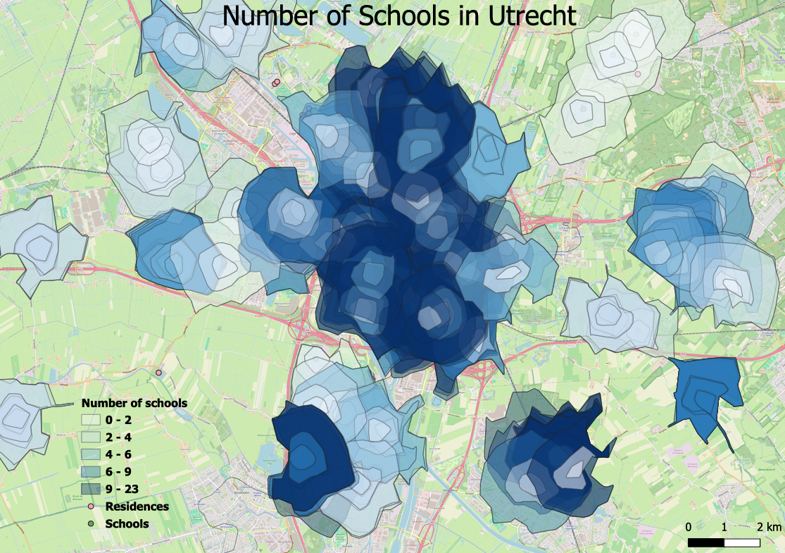
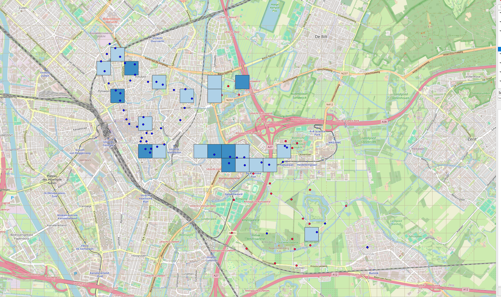
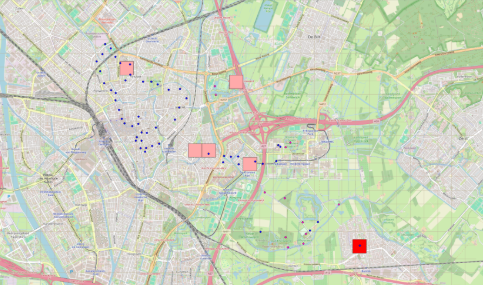
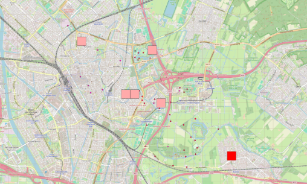

Vector Data and Analysis
This project page showcases an exploration of spatial accessibility and urban geography in Utrecht, Netherlands. It covers the isochrones surrounding local schools to evaluate how far schools are from residencies, alongside an evaluation of gendered perceptions across the city using Volunteered Geographic Information (VGI).
Project Overview
This project is split into two main parts.
Part 1 — School Accessibility: The core objective was to create an isochrone map a map that depicts an area accessible from a point within a certain time threshold - aiming to show how close residencies such as houses and apartments are to schools in Utrecht. The spatial question that I attempted to answer was how many houses and apartments are within a 20 minute walking transit time from schools.
Part 2 — Perceived Pleasantness (VGI): In this part, I was able to generate a density map answering the spatial question: Where in Utrecht is the most pleasant according to men versus women? I used the data that was collected in class using Volunteered Geographic Information and downloaded the data points into QGIS.
Background on Methods
Some of the methods that can be used while analysing vector data are the following:
- Kernels & Density Estimation: Kernels are window functions for each observation, or data point, that determine the part of the data point that is used for density estimation; its weight. Density estimation is the construction of a density function from the observed data.
- Aerial Interpolation: Next, aerial interpolation is the process of using data from source zones with known values to target zones with unknown values.
- Classification & Clusters: Classification is when categories are applied to data, and clusters is when categories are extracted from data.
- Point Pattern Analysis: Point pattern analysis is the process of studying the spatial distribution of points on a map which can be done by analysing single points or the relationships between points.

This map visualizes the walking accessibility around schools in Utrecht, using an isochrone layer created in QGIS. Schools are represented as green points and the residences as pink points.
The isochrones are generated from each school location at different walking time thresholds, meaning that they show how much time it would take to walk away from the schools in all directions. The darkest shade of green shows a 5 minute diameter away from the school, the slightly lighter green polygon has a diameter of 10 minute walking distance and the lightest green is of a 20 minute walking distance diameter.
By overlaying the residencies on the map, we can see that most homes fall within a short walking distance from schools. In the most urban area of Utrecht, the isochrone layers overlap, illustrating that residences in the center of Utrecht should have no problem walking to schools. A few rural residencies do not fall within a 20 minute walking time threshold from schools, indicating potential accessibility gaps.
One limit to this map is that there are very few houses and apartments shown, this is most probably due to a lack of data, seeing as there are surely more residencies in Utrecht than those depicted by the pink points.

In this second version of the map I added a function which counts the number of residencies in each isochrone layer. This is useful because it tells us how many residencies are within walking distances from the schools. The darker blue illustrates a higher density of residencies within walking distances from schools and the lighter blue depicts less residencies within the schools' isochrone layers. I chose the blue gradient because this is a neutral color to depict a count.
The title that I put on this map is "Number of Schools in Utrecht", while it does illustrate the higher density of schools in the center of the city, a more fitting title would be "Number of Residencies within Walking Distances from Schools in Utrecht." Similarly, the title of the legend "Number of schools" should be "Number of Residencies."
Methodology
Data source: OpenStreet Map - an open source which provides data on interferences such as buildings and roads all over the world.
Topology is the spatial relationship between geographic features.
- To create the isochrone layers around the schools I used Open Route Service and the ORS tools plug-in in QGIS.
- Next, I used the "count points within polygon" tool to count the number of residencies within each isochrone layer.
I used these methods because they allow me to visualize the schools accessibility based on travel times and to measure the number of residences with nearby access to schools. This type of spatial analysis is interesting for urban planners to assess the equal distribution of school infrastructure relative to where families live.
Perceived Pleasantness Analysis (VGI Data)
An analysis of Volunteered Geographic Information data points experimented with inside QGIS to study community perceptions.
Volunteered geographic information (VGI) is the harnessing of tools to create geographic data provided voluntarily by individuals.
Figure 1: Density of the Data Points in Utrecht

In this first figure, I separated the data points based on the gender of the people that entered the data into VGI. The blue points show data points entered by men and the red points show data entered by women. I then created a grid which is shown in light grey which allowed me to use the "count points within polygons" function to count the number of points within each grid square. Next, I used a blue color gradient to show where there are the most data points. (These seem to have only registered the men's points despite the fact that I entered all the data points in the count function.)
Figure 2: Most Pleasant Areas in Utrecht


Here, I added a layer showing the data points where the pleasantness was rated 5 out of 5 stars, these points are shown in pink on this map. The top figure shoes the pink points as well as the men’s points and the bottom figure shoes the pink points and the women’s points. Using this information, we know that 12 data points with pleasantness rated at 5 were entered by women versus only 10 points for men. Despite the fact that the men entered more data points than the women, they have less points with high pleasantess. This gives us an attempted answer to the spatial question on perceived pleasantness, as it seems that women perceived things as more pleasant than men in Utrecht.
VGI Insights
One thing I learned about the data collection process is how useful volunteer geographic information can be as it is an efficient method to collect data fast. Something I might do differently is distribute groups more equally by gender, especially if this is a variable that I will attempt to analyse afterwards.